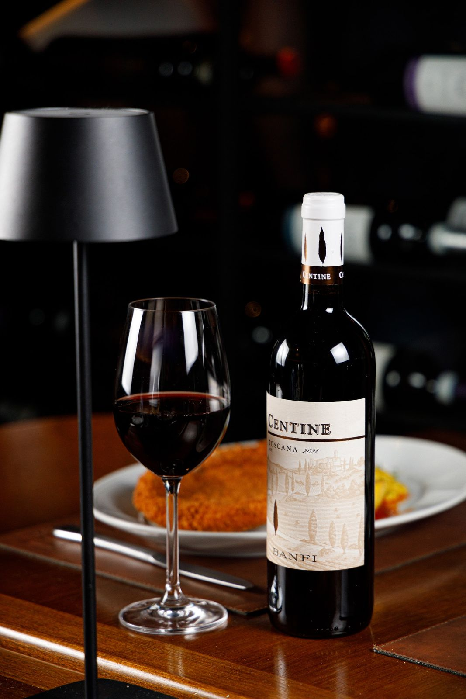
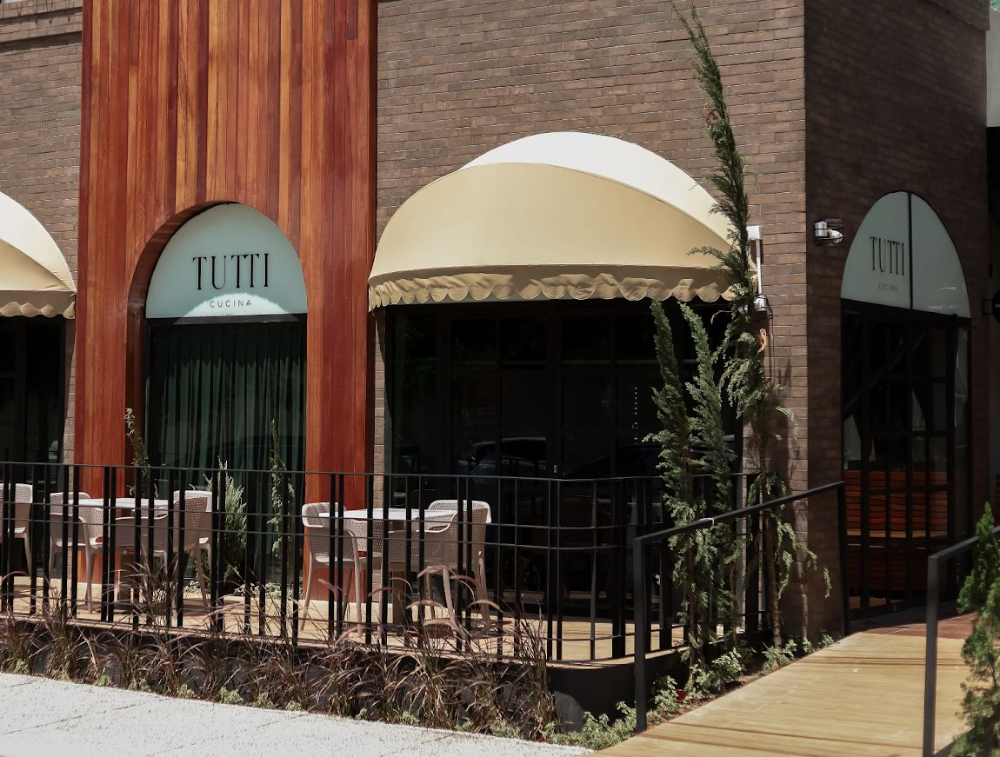
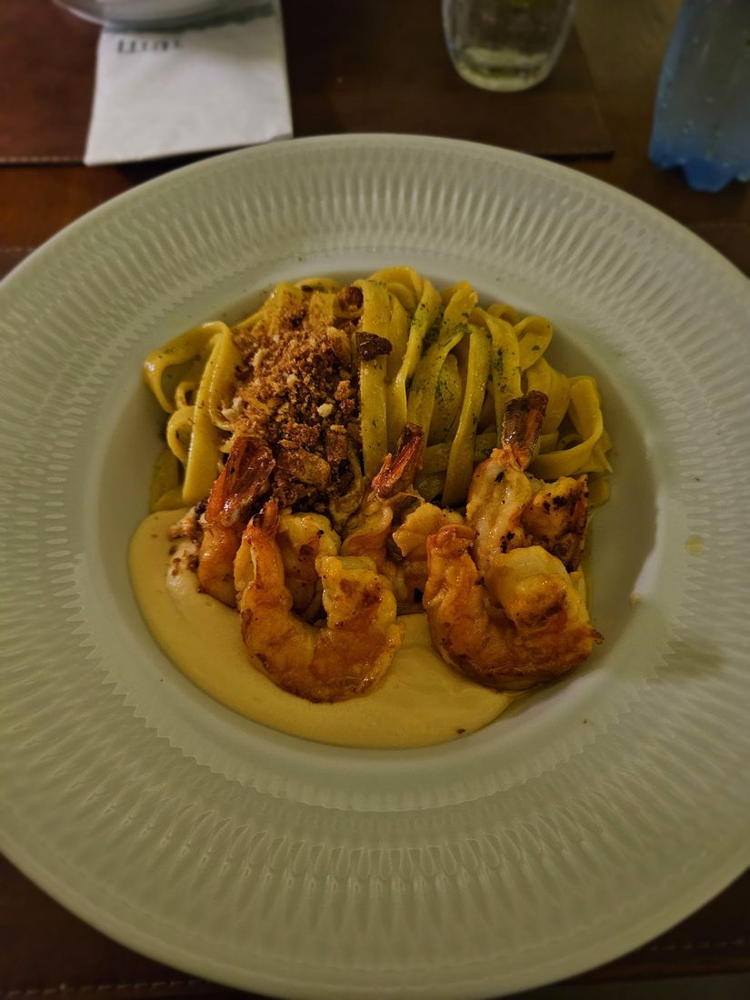
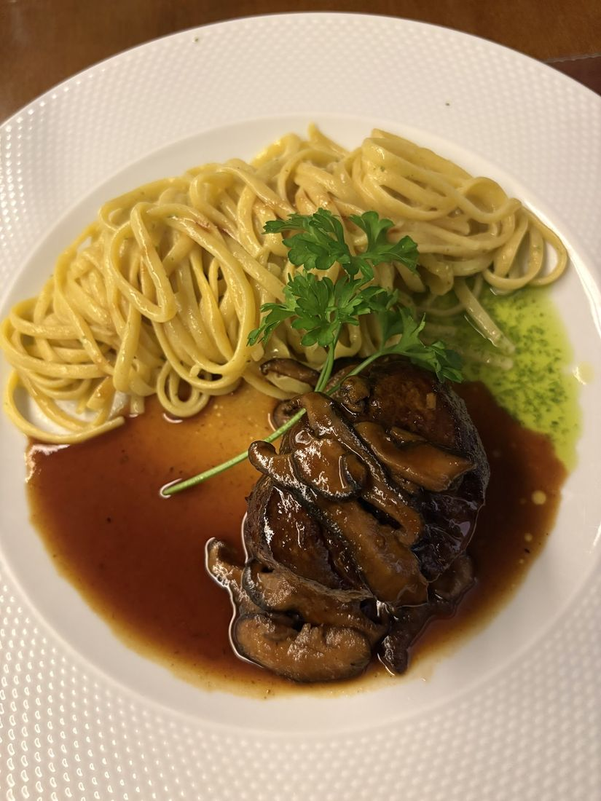
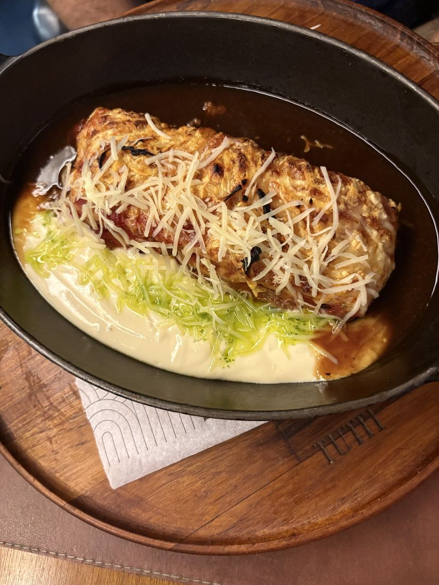
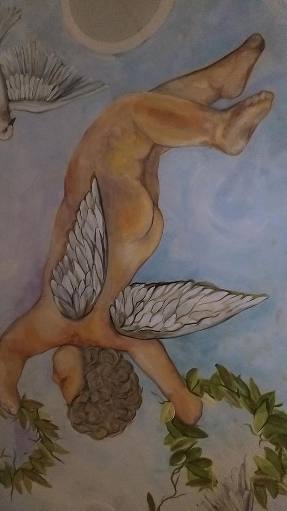

Cucina, vino e amici
Cozinha italiana com massa fresca, risotos e frutos do mar, para almoço e jantar, todos os dias, na R. Potengi.
Tijolo, madeira e varanda em Petrópolis
Na R. Potengi, 617, a fachada de tijolo escuro, o painel de madeira e os toldos cremes dão o tom da casa. Tem mesas na varanda e salão para almoço e jantar. Quem prefere comer em casa pede online, para entrega ou retirada.

Algumas casas da cucina
Seleção do cardápio do pedido online. Valores e lista completa: accon.ai/tutticucina.
Crostini Al Gamberi
Camarão, tomates italianos assados, stracciatella e pesto em pão de azeitona azapa de fermentação natural.
La Nostra Burrata
Burrata fresca di bufala, parma, caramelo de pistache trufado, tomates confit. Acompanha pão da casa.
Gnocchi Frito Trufado
Gnocchi de batata frito, finalizado com parmesão e azeite trufado.
Ravioli de Pato
Confit de pato e molho especial de chianti trufado.
Risotto al Funghi
Arroz carnaroli com cogumelos e parmesão.
Fettuccine al Gamberi
Camarão grelhado com molho especial do chef e massa fresca.
Polpo e Riso
Polvo braseado no nosso josper (forno a carvão), acompanhado de risotto pomodoro.
Filetto Alla Toscana
Mignon grelhado com molho especial de chianti trufado, acompanha risotto funghi.
Tiramissú
Creme com mascarpone, biscoito banhado em café, ganache e licor, finalizado com cacau em pó.
Filetto alla Parmegiana Grande
Versão grande, serve 2 pessoas: mignon à milanesa gratinado, massa fresca, molho de tomate artesanal e manjericão.
À mesa




Fotos do Google Maps da casa.
Quem já sentou à mesa
Nota 4,6 · 452 avaliações no Google Maps
- 4,6452 avaliações no Google
“Visitei o restaurante em um sábado. Chegamos por volta das 19h e não pegamos fila de espera. O cardápio oferece excelentes opções com frutos do mar e carnes variadas. […] Pedi uma massa com camarão e estava maravilhosa!”
Ana · avaliação no Google“Fui com um grupo de amigos e todos os pratos pareciam saborosos.”
Ana · avaliação no Google
Nota e total do Google Maps. Trechos de avaliações reais, citados com o primeiro nome de quem escreveu.
Venha à mesa, ou peça em casa
Endereço
R. Potengi, 617
Petrópolis, Natal/RN
Contato
+55 84 3190-1369
Reserva de mesa a confirmar
Horário
Todos os dias, almoço e jantar.
Horário do salão a confirmar
Pedido online: seg a sáb, 11h às 15h e 18h às 22h30; dom, 11h às 16h e 18h às 22h30